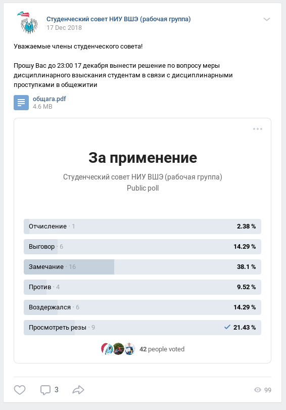

Работа секретаря в студсовете заключается в работе с протоколами заседаний и выписками. Когда в студсовет НИУ ВШЭ (он же БСС) приходит дисциплинарка, то ее направляют в правовой комитет студсовета НИУ ВШЭ и локальному студсовету.
Как только ты получил дисциплинарку, начинается твоя работа.
Раньше локальные студсоветы направляли выписки по дисциплинаркам обратно в БСС, однако, с принятием нового положения, этого делать больше не придется. Однако, на данный момент не решен вопрос взаимодействия с правовым комитетом. Как только вопрос будет решен и локальные студсоветы получат право самостоятельно отправлять выписки по дисциплинаркам, будет добавлен соответствующий пункт.
Второе нововведение, введение весов. Для упрощения подсчета голосов ведется разработка программы (должна быть готова к первому заседанию)
Итак. Студент сделал что-то плохое и администрация решила предъявить ему дисциплинарное взыскание. Учебный офис его образовательной программы пишет акт, о дисциплинарном проступке и запрашивает со студента объяснительную (либо, если студент ее не предоставляет, пишет акт о непредоставлении объяснительной)
Таким образом, минимальный набор необходимых документов следующий:
Если учебный офис не предоставил один из этих документов, то права рассматривать его у вас нет. В таком случае, секретарь должен запросить недостающий документ
Когда все документы собраны, можно приступать к обсуждению дела и голосованию по нему. На все про все у студсовета есть 5 рабочих дней начиная от получения документов и заканчивая написанием выписки
Голосования обычно проводятся в так называемых "Рабочих группах", приватных группах, созданных во ВКонтакте (вероятно, у вас она уже есть). Сами голосования выглядят следующим образом (клик чтобы развернуть)
Голосование можно закрыть при достижении кворума (половина от числа состава) и выполнении требований положения. Стоит дождаться, пока обсуждение вопроса завершится (при условии, что сроки рассмотрения позволяют это сделать) и только потом готовить выписку и закрывать голосование.
Пример выписки:
Пункты, на которые необходимо обратить внимание
Предыдущий секретарь оставил шаблон для выписок в ворде. Вскоре планируется перевести секретарей на latex (возможно с автоматизацией)
Выписку отправляем обратно в БСС
Протоколы по структуре совпадают с выписками, поэтому для шаблона смотрите предыдущий пункт, распишу отличия
На этом отличия закончились :D
Как видите, все очень просто! По всем вопросам всегда можно обратиться ко мне в личку, либо написать на почту rainbow_horse@edu.hse.ru (лучше в личку)